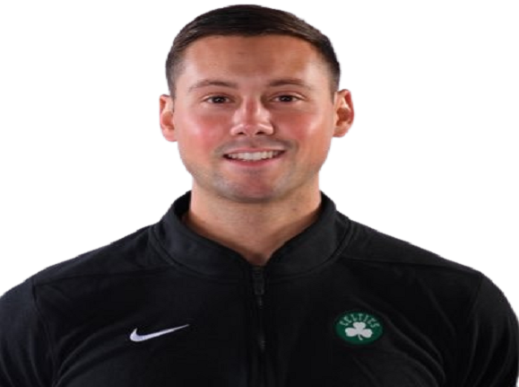

The Boston Celtics (/'sɛltɪks/ SEL-tiks) are an American professional basketball team based in Boston. The Celtics compete in the National Basketball Association (NBA) as a member of the Atlantic Division of the Eastern Conference. Founded in 1946 as one of the league's original eight teams, the Celtics play their home games at TD Garden, which is also the home of the National Hockey League's Boston Bruins. The Celtics are one of the most successful teams in NBA history. The franchise's 17 NBA championships are the joint most of any team, alongside their historical rival Los Angeles Lakers. The Celtics currently hold the record for the most recorded wins of any NBA team.
Introduction
The Celtics have a notable rivalry with the Los Angeles Lakers, which was heavily highlighted throughout the 1960s and 1980s. During the two teams' many match-ups in the 1980s, the Celtics' star, Larry Bird, and the Lakers' star, Magic Johnson, had an ongoing feud. The franchise has played the Lakers a record 12 times in the NBA Finals (including recent appearances in 2008 and 2010), of which the Celtics have won nine.Four Celtics players (Bob Cousy, Bill Russell, Dave Cowens and Larry Bird) have won the NBA Most Valuable Player Award for an NBA record total of 10 MVP awards.Both the nickname "Celtics" and their mascot "Lucky the Leprechaun" are a nod to Boston's historically large Irish population, and also to the Original Celtics, a marquee team prior to the NBA.
The Celtics' rise to dominance began in the late 1950s, after the team, led by coach Red Auerbach, acquired center Bill Russell, who would become the cornerstone of the Celtics dynasty, in a draft-day trade in 1956. Led by Russell and point guard Bob Cousy, the Celtics won their first NBA championship in 1957. Russell, along with a talented supporting cast of future Hall of Famers including John Havlicek, Tom Heinsohn, K. C. Jones, Sam Jones, Satch Sanders, and Bill Sharman, would usher the Celtics into the greatest period in franchise history, winning eight consecutive NBA championships from 1959 to 1966. After Russell retired in 1969, the team entered a period of rebuilding. In the mid-1970s, the Celtics became contenders once again, winning two championships in 1974 and 1976 under the leadership of center Dave Cowens, forward John Havlicek, and point guard Jo Jo White. In the 1980s, the Celtics returned to dominance, as well as renewed competition with the "Showtime" Lakers, who were led by Magic Johnson and Kareem Abdul-Jabbar. Anchored by the "Big Three" of Larry Bird, Kevin McHale, and Robert Parish, the Celtics won championships in 1981, 1984, and 1986. The team defeated the Lakers in the 1984 Finals, but lost to Los Angeles in 1985 and 1987.
After the departure of Parish as a free agent, the retirements of Bird and McHale, as well as the untimely deaths of 2nd overall draft pick Len Bias and star player Reggie Lewis, the team struggled through the 1990s and much of the early 2000s. It was not until the Celtics assembled a new "Big Three" of Kevin Garnett, Paul Pierce, and Ray Allen that they found success once again. Under the leadership of head coach Doc Rivers, the team beat the Lakers to win a championship in 2008, but lost to Los Angeles in a seven-game series in 2010, the latest Finals matchup between the two ancient rivals. By the start of the 2013-14 season, none of the new "Big Three" were still with the team. Kevin Garnett and Paul Pierce were traded away to the Brooklyn Nets, while Allen left as a free agent. After a period of rebuilding, the Celtics became a force again under head coach Brad Stevens. During the 2016-17 season, the Celtics clinched the top seed in the Eastern Conference, but were eliminated in the Conference Finals. Led by Jaylen Brown and Jayson Tatum, the team reached the Conference Finals four times over the following six years and returned to the NBA Finals in 2022, losing to the Golden State Warriors.
Shield's Team

Hola
Trophies

1957 NBA Champions
The 1957 NBA World Championship Series was the championship series of the 1956-57 National Basketball Association season, and was the conclusion of the 1957 NBA Playoffs. The best-of-seven series was played between the Western Division champion St.

2021-2022 NBA Eastern Conference Champions
The Celtics were one of the most entertaining franchises during the 2021-22 season. The Celtics won the division and the Eastern Conference championship en route to another NBA Finals appearance.

1981 NBA Champions
Spalding NBA Official Champions basketball. Hand-signed by members of the 1981 NBA Champions Boston Celtics, with Larry Bird, Robert Parish, Gerald Henderson, Cedric Maxwell, and Rick Robey.

2008 NBA Champions
Led by Paul Pierce, Kevin Garnett, and Ray Allen, and holding home court advantage, the Celtics defeated the Lakers, led by Pau Gasol and MVP Kobe Bryant, in six games. It was their first title in twenty-two years and their 17th title overall.
Video Presentation
Boston Celtics 2022-2023 Intro Video
Coaching Staff

Head Coach
Joe Mazzulla

Assistant Coach
Charles Lee

Enhancement Coach
Craig Luschenat

Senior Consultant
Jeff Van Gundy
Gallery